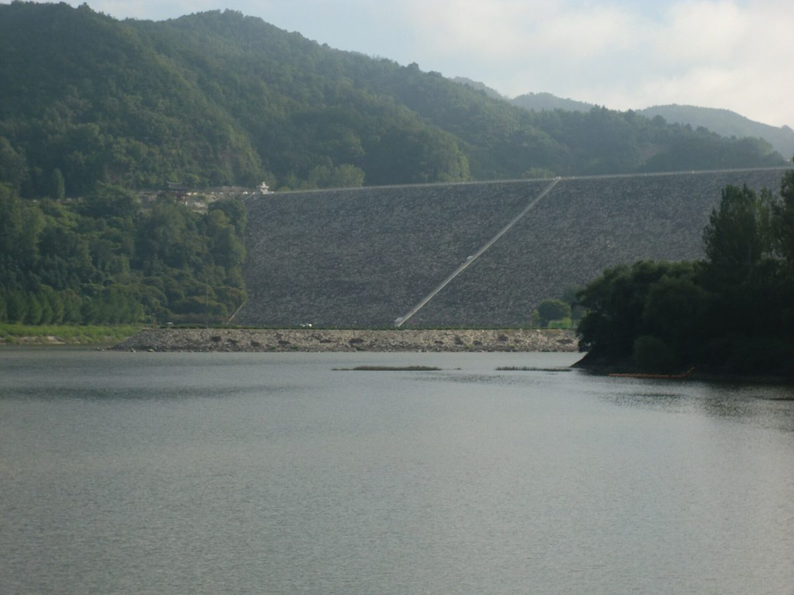

안동댐 50년 상생 포럼…K-water 수상태양광 '햇빛연금'에 2,000여 가구 참여 방안, 가구당 연 55만 원 예상

와룡면·석동동 주민 참여 방안 담긴 계획 소개…용수 매출 6%·발전 수익 22% 지원사업 출연, 심층수 '물산업파크' 제안과 수질 개선 먼저라는 지적도
한국수자원공사(K-water)가 안동댐 준공 50주년을 맞아 연 지역 상생 학술포럼에서, 댐 수면에 세울 수상태양광의 발전 수익을 주민에게 나누는 '햇빛연금' 방안이 소개됐다. K-water가 최근 마련한 안동댐 수상태양광 발전사업 계획에는 와룡면과 석동동의 2,000여 가구가 참여하는 방안이 담겼으며, 계획대로 추진되면 가구당 해마다 55만 원가량의 수익이 돌아갈 것으로 예상된다. 안동댐은 지난 50년 동안 영남권 1,300만 명의 주요 식수원 구실을 해 왔지만, 댐 건설로 2만여 명이 고향을 떠났고 주변 지역은 각종 개발 제한을 받아 왔다. 조영식 K-water 낙동강유역본부장은 용수 매출의 6%와 댐 발전 수익의 22%를 지원사업으로 출연해 주변 지역을 돕고 수질을 개선해 관광객을 끌어들이겠다고 밝혔다. 포럼에서는 연중 4~6도를 유지하는 댐 심층수로 AI 데이터센터를 식히고 데워진 물은 스마트팜 난방에 쓰는 '물산업파크' 구상(김희철 경북연구원 박사)과, 안동 바이오생명 국가산업단지에 2033년까지 고순도 공업용수 공급시설을 갖추는 방안, 수상레저단지 조성 등도 나왔다. 김영훈 국립경국대 교수는 퇴적물의 유해성과 제거 과정의 재부유 오염에 대한 연구가 거의 없다며 수질 개선이 먼저라고 지적했다.
시민에너지 관점
댐 주변 2,000여 가구가 발전 수익을 직접 나눠 받는 방안은, 50년 동안 물을 내주고 개발 제한을 견뎌 온 주민에게 처음으로 댐 위 발전소의 이익이 닿는 길을 연다는 점에서 의미가 크다. 다만 용수 매출 6%·발전 수익 22% 출연처럼 공기업이 정해 내려주는 지원금은 사업자의 사정에 따라 줄거나 바뀔 수 있다는 우려가 남는다. 스코틀랜드 정부가 재생에너지 사업에 MW당 해마다 5,000파운드의 공동체 기금을 권고하면서도 주민이 지분을 갖는 공동 소유를 따로 권장해 온 것은, 기금은 받는 돈이고 지분은 주민이 가진 몫이기 때문이다. '햇빛연금'이 이름 그대로 오래가는 연금이 되려면 주민이 출자자로 발전 설비의 일부를 소유하는 구조여야 하며, K-water는 설비 규모·사업비와 함께 주민 참여 방식을 공개하고 와룡면·석동동 주민과 먼저 협의해야 한다.
출처: 안동MBC 2026-11-05 이도은 원문 보기
安東ダム50年の共生フォーラム…韓国水資源公社の水上太陽光「日差し年金」に2,000余世帯参加の案、1世帯あたり年55万ウォン見込み
臥竜面・石洞洞の住民参加案を盛り込んだ計画を紹介…用水売上の6%・発電収益の22%を支援事業に拠出、深層水の「水産業パーク」提案や水質改善が先との指摘も
韓国水資源公社（K-water）が安東ダム竣工50周年を機に開いた地域共生の学術フォーラムで、ダムの水面に設ける水上太陽光の発電収益を住民に分配する「日差し年金（햇빛연금）」の案が紹介された。K-waterが最近まとめた安東ダム水上太陽光発電事業の計画には、臥竜面と石洞洞の2,000余世帯が参加する案が盛り込まれ、計画通りに進めば1世帯あたり年間55万ウォンほどの収益が見込まれる。安東ダムはこの50年間、嶺南圏1,300万人の主要な水源としての役割を果たしてきたが、ダム建設で2万人余りが故郷を離れ、周辺地域はさまざまな開発規制を受けてきた。チョ・ヨンシクK-water洛東江流域本部長は、用水売上の6%とダム発電収益の22%を支援事業として拠出し、周辺地域を支援するとともに水質を改善して観光客を呼び込みたいと述べた。フォーラムでは、年間を通じて4～6度を保つダムの深層水でAIデータセンターを冷やし、温まった水をスマートファームの暖房に使う「水産業パーク」構想（キム・ヒチョル慶北研究院博士）や、安東バイオ生命国家産業団地に2033年までに高純度の工業用水供給施設を整備する案、水上レジャー団地の造成なども出された。キム・ヨンフン国立慶国大学教授は、堆積物の有害性や除去の過程での再浮遊による汚染についての研究がほとんどないとして、水質改善が先だと指摘した。
市民エネルギーの視点
ダム周辺の2,000余世帯が発電収益を直接受け取る案は、50年にわたって水を差し出し開発規制に耐えてきた住民に、初めてダムの上の発電所の利益が届く道を開くという点で意義が大きい。ただ、用水売上の6%・発電収益の22%の拠出のように公企業が決めて配る支援金は、事業者の事情で減ったり変わったりしかねないという懸念が残る。スコットランド政府が再生可能エネルギー事業に1MWあたり年5,000ポンドのコミュニティー基金を推奨しつつ、住民が持ち分を持つ共同所有を別に勧めてきたのは、基金は受け取るお金であり、持ち分は住民自身の取り分だからだ。「日差し年金」が名前の通り長続きする年金となるには、住民が出資者として発電設備の一部を所有する仕組みでなければならず、K-waterは設備規模・事業費とともに住民の参加方式を公開し、臥竜面・石洞洞の住民とまず協議すべきだ。
出典: 安東MBC 2026-11-05 イ・ドウン 原文を読む
安东大坝50年共生论坛…韩国水资源公社水上光伏"阳光年金"拟让2,000余户参与，预计每户年收益55万韩元
介绍包含卧龙面、石洞洞居民参与方案的计划…用水收入6%、发电收益22%拨作支援事业，另有深层水"水产业园区"构想及应先改善水质的意见
韩国水资源公社（K-water）在安东大坝竣工50周年之际举办的地区共生学术论坛上，介绍了把大坝水面上建设的水上光伏发电收益分给居民的"阳光年金（햇빛연금）"方案。K-water近期拟定的安东大坝水上光伏发电项目计划中，包含了让卧龙面和石洞洞2,000余户家庭参与的方案；若按计划推进，预计每户每年可获得约55万韩元收益。过去50年里，安东大坝一直是岭南地区1,300万人的主要饮用水源，但建坝使2万余人离开故乡，周边地区也长期受到各种开发限制。K-water洛东江流域本部长Cho Young-sik表示，将把用水收入的6%和大坝发电收益的22%拨作支援事业，用于扶持周边地区，并改善水质以吸引游客。论坛上还提出了多项构想：利用全年保持4~6度的大坝深层水为AI数据中心降温、再把升温后的水用于智慧农场供暖的"水产业园区"（庆北研究院博士Kim Hee-cheol），到2033年在安东生物生命国家产业园区建成高纯度工业用水供应设施，以及建设水上休闲园区等。国立庆国大学教授Kim Young-hoon指出，关于沉积物的有害性以及清除过程中再悬浮造成污染的研究几乎没有，应先改善水质。
市民能源视角
让大坝周边2,000余户直接分享发电收益的方案，为50年来让出水源、忍受开发限制的居民，第一次打开了分享坝上电站收益的通道，意义重大。不过，像用水收入6%、发电收益22%这样由国企决定并下拨的支援金，可能因经营者的情况而减少或改变，这一担忧仍然存在。苏格兰政府在建议可再生能源项目每兆瓦每年拿出5,000英镑社区基金的同时，还另外鼓励居民持股的共同所有，原因就在于基金是别人给的钱，股份才是居民自己的份额。"阳光年金"要名副其实地成为长久的年金，就必须让居民作为出资者拥有部分发电设施；K-water应公开设施规模、项目费用和居民参与方式，并先与卧龙面、石洞洞居民协商。
来源: 安东MBC 2026-11-05 Lee Do-eun 查看原文
Andong Dam at 50: K-water floating solar 'sunlight pension' plan would involve 2,000-plus households, with about 550,000 won a year expected per household
Plan covering residents of Waryong-myeon and Seokdong-dong presented at forum; 6% of water sales and 22% of power income go to local support, with a deep-water 'water industry park' proposal and calls to fix water quality first
A plan to share income from floating solar on the Andong Dam reservoir with local residents, dubbed a "sunlight pension", was presented at an academic forum on regional coexistence held by the Korea Water Resources Corporation (K-water) to mark 50 years since the dam's completion. K-water's recently drafted floating solar plan for the dam includes a proposal for more than 2,000 households in Waryong-myeon and Seokdong-dong to take part, and if it proceeds as planned each household is expected to receive about 550,000 won a year. For half a century Andong Dam has been a main source of drinking water for 13 million people in the Yeongnam region, but its construction forced more than 20,000 people from their homes and the surrounding area has lived under a range of development restrictions. Cho Young-sik, head of K-water's Nakdong River basin headquarters, said the corporation would put 6% of its water sales and 22% of income from dam power generation into support programmes for nearby communities and improve water quality to draw visitors. Other ideas at the forum included a "water industry park" that would use deep reservoir water, which stays at 4 to 6 degrees all year, to cool AI data centres and then heat smart farms (Kim Hee-cheol, Gyeongbuk Research Institute), a high-purity industrial water supply for the Andong bio-life national industrial complex by 2033, and a water leisure complex. Kim Young-hoon, a professor at Gyeongkuk National University, said water quality must come first, noting that there has been almost no research on how harmful the sediment is or on pollution from sediment stirred up during removal.
Citizen Energy View
Letting more than 2,000 households around the dam share power income directly would, for the first time, give residents who have given up their water and lived with development limits for 50 years a route to the earnings of a power plant on the dam. Yet support money set and handed down by a public corporation, such as the 6% of water sales and 22% of power income, can shrink or change with the operator's circumstances. The Scottish Government recommends community benefit funds of 5,000 pounds per MW a year for renewable projects but separately encourages shared ownership, because a fund is money that is given while a stake is something residents own. For the "sunlight pension" to become a lasting pension in more than name, residents must own part of the installation as investors, and K-water should publish the plant's size, cost and how residents can take part, and consult the people of Waryong-myeon and Seokdong-dong first.
Source: Andong MBC 2026-11-05 Lee Do-eun Read the original